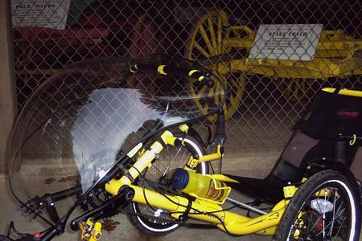

Health & Safety

Tradition of yellow
Safety
I am visible yellow.
Visibility is my main safety concern when riding any cycle on the
street, especially at night. So, I have good lights. The low
height of the tricycle does not seem to prevent drivers from seeing
me. Some wisdom from Dana Lieberman, on the bentrideronline trike
forum: "drivers have a hard time seeing you from the side, not the
front and back. Thus, you have to be aware of situations where you
become invisible, and ride appropriately". The only time that I
really get concerned about the low profile is when I'm riding through a
parking lot, and someone might back up without seeing me. There is
a flag. I just use the factory flag; I don't feel the need to add
any additional flaggage, though I do admire those who
fly the laundry proudly.
(Photo from
greenman62, on the Trike forum at bentrideronline.)
My lights are bright. I
actually feel more visible at night than in the day. I have a
NiteRider headlight (32 watts of halogen) and high-intensity LED
taillight, which both run off of the water-bottle style battery mounted
under the seat. I originally installed the taillight directly
under the top of the back of the rack - but then I realized that the
light was not visible from the sides, since it was between the panniers.
The taillight is now installed on the top side of the rack.
(The NiteRider taillight is designed to provide some visibility
from the sides.) For backup, and just extra lighting for
high-traffic experiences, I have two Cateye EL-400 LED headlights and a
Cateye LED taillight. I use flashing mode for all of the LED
lights (to be seen better).
I recommend clipless pedals when
riding a trike. Having a foot slip off of the pedal could result
in a foot hitting the ground, which could be extremely unpleasant at
high speed. Having a clipless pedal system does not eliminate the
possibility of a foot slip, but it reduces it.
I tried Shimano SPD pedals, but felt like my feet did not
have enough freedom of movement, and my knees were at risk. The
Crank Brothers' egg-beater style pedals are much more comfortable.
They seem to allow more 'degrees of freedom'. The SPD's
seemed to rotate ('float') about a single fixed point only, whereas the
egg-beaters seem to rotate about any point that I want them to.
The dual mirrors are helpful.
It is difficult for me to turn my head to see behind me, without
accidentally adding some unwanted input to the steering. I use the
miror on the left mostly, but depending on the situation, sometimes I
can get a better view out of the right-hand mirror. And, the dual
mirror setup provides a couple of extra hand positions, resting the hand
fully or partially on the mirror booms.
Health
The exercise that I get on the
Pocket is highly aerobic. With the low gear range of the Pocket
(thanks to small wheels coupled with standard drivetrain components), I
don't need to 'mash' up the big hills, I can 'spin'.
{kind=link}
{kind=link}